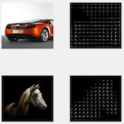
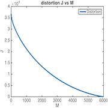
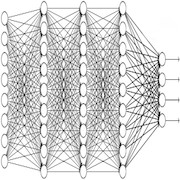

Image classification GithubPaper
Classifier that recognizes the object present in an image using advanced models. The objects could be classified as a horse, airplane, car, or something else.
Matlab
This is the second project of the course 'Pattern Classification and Machine Learning.' It consists of 6,000 images containing different kinds of objects: horses, cars, airplanes, or anything else. The goal of the project is to build two classifiers: the first one is a binary classifier where the first class consists of images with horses, cars, or airplanes, and the second class consists of other objects. The second classifier is a multi-class classifier where the images are classified into the classes horse, car, airplane, or other. The predictions were made for 15,000 images with an error rate of 8%. The best models we obtained used neural networks and SVM."
The Project
Feature engineering
In machine learning, the features are the most crucial part in order to have a good model. We have used two features: histogram of Oriented Gradients (HOG) and OverFeat ImageNet CNN features. HOG is widely used in computer vision to detect objects. It decomposes the images into several bins, and for each of those, a histogram of the orientation of the gradients is computed using their angles and weighted by their magnitudes. The OverFeat ImageNet CNN features are also very interesting because they are extracted from a convolutional network-based image feature extractor called OverFeat. These were trained on the ImageNet dataset (tens of millions of images).
Curse of dimensionality
In this project, 6,000 images were provided, and we obtained a total of 42,273 features. We are clearly faced with the problem of having too many features compared to the number of samples. Another issue is that training might be very slow, which could pose a challenge when we need to create multiple models, train them, and compare their efficiency. One potential solution to this problem is to project the data onto a subspace of the original space. In our case, we employed principal component analysis (PCA) to identify the best linear approximation of dimension M (the dimension of the subspace) for the data.
Advanced models
Simple models such as logistic regression were not powerful enough to achieve a good balanced error rate (BER). We tested decision trees, random forests, artificial neural networks, adaboosting, support vector machines, and others. Ultimately, neural networks and support vector machines appear to have the best BER among all our models.
Miscellaneous
| Type | Course project |
| Degree | M.Sc. EPFL, 1st semester |
| Course | Pattern classification and machine learning |
| Duration | ~50 hours |
| Supervisor | Prof. Mohammad Emtiyaz Khan |
| Co-developer | Jason Racine |